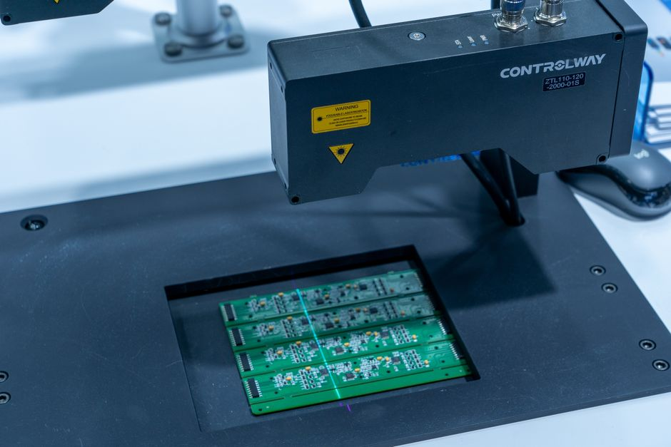
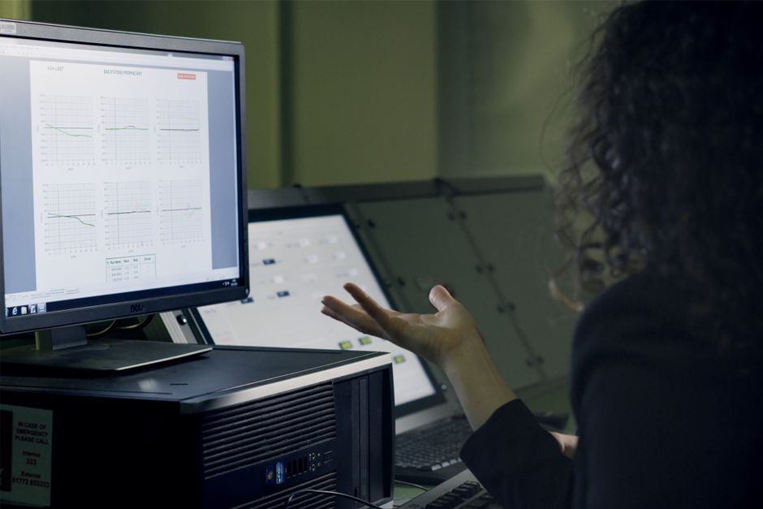

How to Read a Confusion Matrix Class by Class
Overall accuracy hides which classes your model actually understands. Here is how I dig into the confusion matrix row by row to find where a vision model quietly fails.

Why the headline number lies
When I first started evaluating classifiers, I trusted overall accuracy far more than I should have. It is a single, comforting number: 94% accuracy sounds like a model you can ship. But accuracy is an average, and averages hide variance. If a dataset has ten classes and one of them makes up sixty per cent of the samples, a model that nails that one class and stumbles on the rest can still post an impressive top-line score.
This matters enormously in computer vision, where class imbalance is the rule rather than the exception. Consider a defect detection model with classes 'no defect', 'scratch', 'dent', and 'crack'. In a typical production line, 'no defect' might account for the vast majority of images. A model that learns to say 'no defect' whenever it is unsure will look fantastic on paper while missing the actual defects it was built to catch.
The confusion matrix is the tool that exposes this, but only if you read it properly. Most people glance at the diagonal, note that it is mostly dark or mostly large numbers, and move on. The real information is in the off-diagonal cells, read row by row and column by column, and in the ratios you derive from them, not the raw counts.
Reading rows versus columns
A confusion matrix is usually laid out with true labels as rows and predicted labels as columns, though conventions vary and you should always check the axis labels before drawing conclusions. Reading along a row tells you, for a given true class, where the model's predictions actually landed. This is the basis of recall: of all the actual 'crack' images, how many did the model correctly call 'crack', and where did the rest go?
Reading down a column tells you the opposite story: of all the times the model predicted 'crack', how many of those images were genuinely cracks, and how many were something else wearing a crack's clothing? This is the basis of precision. Conflating these two views is one of the most common mistakes I see. A model can have excellent recall on a class, catching nearly every true instance, while having poor precision on that same class, because it also cries 'crack' on plenty of scratches and dents.
Suppose our defect model produces this row for the true class 'crack', out of two hundred crack images: 150 correctly predicted as crack, 30 predicted as dent, 15 predicted as scratch, and 5 predicted as no defect. Recall for crack is 150 out of 200, or 75%. That already sounds mediocre, but it gets more interesting when you look at the column. Suppose the model predicted 'crack' 300 times in total across the whole test set, and only 150 of those were true cracks. Precision is then 150 out of 300, or 50%. Half of everything flagged as a crack is a false alarm. Overall accuracy could still sit comfortably above 90% if the majority class is handled well, and neither of these class-specific problems would show up in that single number.

Worked example: where the errors actually go
Let us stay with the four-class defect problem and look at the full pattern of confusion, because the direction of errors tells you something different from their mere existence. Say the 'dent' row shows most misclassified dents landing in 'scratch', while the 'crack' row shows most misclassified cracks landing in 'no defect'. These are not equally bad. Confusing a dent with a scratch is likely a minor annoyance, perhaps both trigger a manual inspection anyway. Confusing a crack with 'no defect' means a genuine structural fault is waved through the line untouched. The confusion matrix lets you see this directional detail; a single accuracy figure collapses it into nothing.
This is also where I find it useful to normalise the matrix by row, converting raw counts into percentages of the true class. Raw counts are dominated by however many samples of each class happen to be in your test set, which is largely an artefact of how you split your data rather than a property of the model. Row-normalising turns each row into a probability distribution over predicted classes given the true class, which is comparable across classes regardless of how imbalanced your test set is. It also makes rare classes visible, since a row for 'crack' with only 200 samples is just as legible, once normalised, as a row for 'no defect' with 20,000 samples.
I would also flag a leakage-adjacent trap here: if your train and test images share near-duplicate frames from the same video sequence or the same physical object photographed twice, your confusion matrix will look better than the model's real-world behaviour. Always check that your split respects natural groupings, such as by object, by session, or by source video, before trusting any per-class number, matrix included.
What to actually do with this
In practice, I treat the confusion matrix as a diagnostic starting point rather than a final report. For each class, I look at recall to ask 'how much of this class am I missing', and precision to ask 'how much noise am I introducing when I claim this class'. I then look specifically at which other classes absorb the errors, because that tells me whether the mistakes are benign, such as swapping two visually similar minor defects, or costly, such as letting a serious fault masquerade as normal.
Concretely, I would rather report per-class precision, recall, and a short note on where errors concentrate than a single accuracy figure, especially for imbalanced or safety-relevant problems. If a stakeholder only wants one number, I will still give it to them, but I make sure the class-level detail sits right alongside it, because a model that looks excellent overall and quietly fails on the class that matters most is worse than a model with modest accuracy and honestly reported weaknesses. The confusion matrix, read row by row, is how you find that out before your users do.
